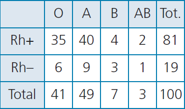

Probabilidad condicionada
Dados dos sucesos, A y B, la probabilidad condicionada de B si A es:

Ejemplo. Esta tabla muestra la distribución de porcentajes de grupos sanguíneos de los españoles. Calcula la probabilidad de tener el grupo B y la misma probabilidad si sabemos que el Rh es +.

\[P\left( B/A \right)=P(B)\text{ o }P\left( A/B \right)=P(A)\]
Entonces, si A y B son independientes:
Ejemplo 1. Si tiramos dos monedas, los sucesos:
A = {C primer lanzamiento} B = {+ 2º lanzamiento} son independientes porque
Ejemplo 2. Sacamos dos cartas (sin reemplazamiento) de una baraja española de 40 cartas. Sean los sucesos:
A = {sacar oro en la 1ª} B = {sacar copas en la 2ª}
¿Son independientes?
Son dependientes
Ejemplo 3. En una ciudad, el 40% de la gente ve habitualmente la TV, un 10% leen libros y un 1% hace ambas cosas con regularidad.
a) Si elegimos una persona al azar, ¿cuál es la probabilidad de que vea la tele o lea un libro con frecuencia?
b) Si elegimos una persona al azar y ve habitualmente la TV, ¿cuál es la probabilidad de que lea libros con regularidad?
\[\begin{align} & a)P\left( TV\cup L \right)=P(TV)+P(L)-P\left( TV\cap L \right)=0,4+0,1-0,01=0,49 \\ & b)P\left( L/TV \right)=\frac{P\left( TV\cap L \right)}{P(TV)}=\frac{0,01}{0,4}=0,025 \\ \end{align}\]
Ejercicio. En una escuela el 30% de los estudiantes juegan al baloncesto, el 40% al fútbol y el 50% a uno de ellos o a ambos.
a) Si elegimos a un estudiante al azar. ¿qué probabilidad hay de que juegue al baloncesto y al fútbol?
Obra publicada con Licencia Creative Commons Reconocimiento No comercial Compartir igual 3.0